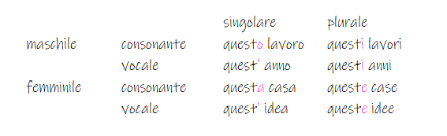

Questo - Questa
pronome
Questo e questa

Esempi 1
| italiaans | nederlands |
|---|---|
| Quando cominciai questo lavoro, pensavo sarebbe stato emozionante. | Toen ik aan deze baan begon, dacht ik dat het spannend zou zijn. |
| Abbiamo rischiato tutto per fare questo lavoro. | We riskeerden alles om dit werk te doen. |
| Detto questo, riconosco che questi lavori dovrebbero essere più accessibili. | Dat gezegd hebbende, erken ik dat deze banen toegankelijker moeten zijn. |
| Ho rischiato per farti ottenere questo lavoro. | Ik heb het risico genomen om je deze baan te bezorgen. |
| Senza questo lavoro, l'umanità sarà inerme. | Zonder dit werk zal de mensheid hulpeloos zijn. |
Esempi 2
| italiaans | nederlands |
|---|---|
| So che vuole comprare questa casa. | Ik weet dat je dit huis wilt kopen. |
| Abbiamo rintracciato la telefonata, veniva da questa casa. | We hebben het telefoontje getraceerd, het kwam uit dit huis. |
| Ho costruire questa casa per mia figlia. | Ik bouw dit huis voor mijn dochter. |
| Non potrete lasciare questa casa senza essere osservato. | U kunt dit huis niet verlaten zonder geobserveerd te worden. |
| Non comprerò questa casa con te. | Ik koop dit huis niet met jou. |
Esempi 3
| italiaans | nederlands |
|---|---|
| Non avrei dovuto metterti quest'idea in testa. | Ik had dat idee niet in je hoofd moeten steken. |
| Einstein era legato a quest'idea. | Einstein was gehecht aan dit idee. |
| Vediamo se possiamo vendere quest'idea anche a tutti gli altri. | Laten we eens kijken of we dit idee ook aan iedereen kunnen verkopen. |
| Puoi levarti pure quest'idea dalla testa. | Dat idee kun je ook uit je hoofd krijgen. |
| Mentre accade tutto ciò, stiamo diffondendo quest'idea nel mondo. | Terwijl dit allemaal gebeurt, verspreiden we dit idee over de hele wereld. |
Esempi 4
| italiaans | nederlands |
|---|---|
| Gli architetti stanno pensando a queste idee da molto tempo. | Architecten hebben lang over deze ideeën nagedacht. |
| Se siete interessati a queste idee, visitate questo sito. | Als u geïnteresseerd bent in deze ideeën, bezoek dan deze site. |
| Sono interessata a queste idee di ripetizione. | Ik ben geïnteresseerd in deze ideeën van herhaling. |
| Dobbiamo liberare noi stessi da alcune di queste idee. | We moeten ons van sommige van deze ideeën bevrijden. |
| Come possiamo aiutarti a diffondere queste idee? | Hoe kunnen we u helpen deze ideeën te verspreiden? |